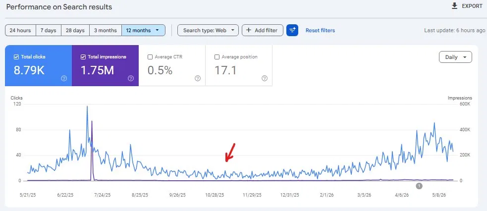
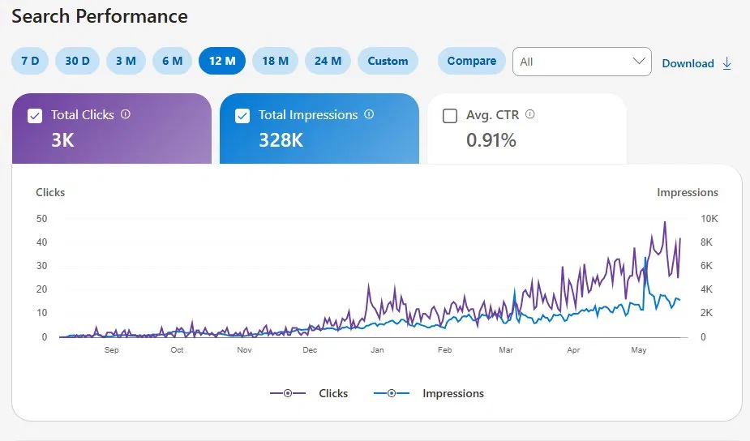
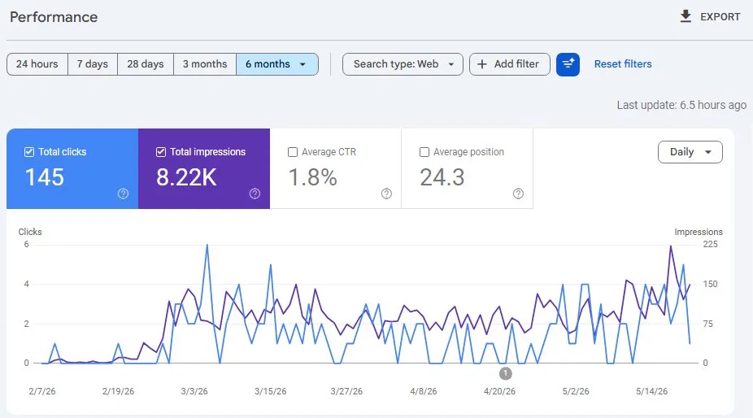

I specialise in Technical and On-Page SEO — diagnosing what's holding your site back and fixing it. I treat every SEO challenge like a problem to solve, not a template to follow.



I'm Anis — an SEO specialist based in Islamabad, Pakistan with 8 years of hands-on experience growing websites and running campaigns across multiple international markets.
My core strength is problem solving. I don't apply cookie-cutter SEO — I dig into why a site isn't performing, find the real issue, and fix it. That mindset has served me across technical audits, content strategy, and site recoveries.
I've worked independently, with business partners on joint ventures, and previously managed a remote blogging team. I also build things — custom WordPress themes, tools, and AI workflows — so I understand the technical side from the inside out.
Tell me about your site and goals — I'll tell you exactly what I'd do.